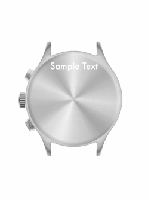

Is it possible to rescale image only if it's bigger, to prevent pixilation for smaller images? using url params.
Also on Cloudinary Cookbook
Text overlays flowing together …
You can add text dynamically to the image by using overlays with …
Generating Video Preview Clips
Creating a dynamic and engaging animated video preview (as opposed to a …
Applying rounded corners to an image
Transforming an image to a rounded version is simply done by using the radius …
Animated GIF manipulation
Transform animated GIFs just like any other image. Use Cloudinary's …
Text overlay positioning
Customize text overlay's position by setting the gravity ( g in URLs) and …
Adding watermarks as an overlay
Add your watermark as an overlay on top of any image by setting the overlay …

Leveraging the Image-Overlay Effect for …
To add custom engravings to your products, such as gadgets like watches, …
Resizing an image to fill given dimensions
Resize your images to fill specified dimensions by setting the width and …